A trained LLM is expensive to run: it needs GPUs, lots of memory, and it writes its answer one token at a time. This chapter is a toolbox for that problem, in three drawers. Drawer 1, generation tricks: the KV cache (don't recompute the past), continuous batching (never let the GPU wait for a slow request), speculative decoding (let a tiny model guess, let the big one check), and faster attention (PagedAttention, FlashAttention-2). Drawer 2, model parallelism: split the work across several GPUs by copying the model (data), cutting it by layers (pipeline) or cutting each matrix (tensor). Drawer 3, quantization: store weights in fewer bits, from naive INT8 to LLM.int8(), NF4, GGUF, GPTQ, EXL2, AWQ and the 1–2-bit frontier. It ends with a table of which inference engine (TGI, vLLM, TensorRT-LLM) supports which trick.
The chapter is one argument: the problem is that LLM inference wastes the GPU; each technique attacks one cause of waste, and each brings its own cost. Read the rows top to bottom; orange boxes are the ideas the next row reacts to.
Deploying an LLM is hard because it needs a lot of compute and a lot of memory. To run it well you need accelerators: GPUs (graphics processing units) or TPUs (Google's tensor processing units). These chips do many operations in parallel, which gives higher throughput.
Not every job has the same time pressure. Some work, like generating documents, can run in batches overnight: nobody is waiting. Other work, like code completion in an editor, needs an answer almost instantly. So optimizing inference (the process of a trained model making predictions on new input) matters a lot in practice. The book names three targets:
A naive deployment (load the model, call generate, done) uses the hardware badly and gives disappointing throughput and latency. The good news: many techniques now exist that speed inference up dramatically. The chapter covers speculative decoding, model parallelism and weight quantization, and says that careful implementations can reach speedups of 2–4X or more. It also introduces three popular inference engines, Text Generation Inference (TGI), vLLM and TensorRT-LLM, and compares which optimizations each one has.
The topics, in order: model optimization strategies, model parallelism, model quantization. By the end you should understand the core challenges of LLM inference and know the state-of-the-art techniques. All code for the chapter is in the book's GitHub repository (PacktPublishing/LLM-Engineering).
The mapping from workload to target is my own reasoning from the chapter's framing, not a list from the book.
A chai stall at a railway station. Latency is how long the first customer waits for their first cup. Throughput is cups per minute across the whole crowd when the train stops. Memory footprint is how much counter space the kettles take. A naive stall boils one cup at a time in a huge pot: slow, wasteful, and the counter is full. The chapter is about the tricks good chai-wallahs use.
Where it breaks: a chai-wallah can pour two cups at once; an LLM truly cannot write token 5 before token 4. That one constraint is why the chapter exists.
Training cost is paid once; inference cost is paid on every request, forever. That is why a small speedup at inference time is worth a lot of engineering. The three targets also pull against each other: big batches raise throughput but can hurt each user's latency; fewer bits save memory but can hurt quality.
"What metrics do you track for LLM serving?" Say: time to first token (latency the user feels), tokens per second (throughput, which sets cost per user), and GPU memory (which caps model size and batch size). Then add that the right balance depends on the product: a voice agent needs a fast first token so speech can start; a batch summarizer only cares about throughput.
Most LLMs in use today, such as GPT or Llama, are built on a decoder-only Transformer. This architecture is made for text generation: it predicts the next word from the words before it, which makes it good at continuing text in a sensible way.
| Architecture | Example | What it does | Good at |
|---|---|---|---|
| Decoder-only | GPT, Llama | Predicts the next token from the previous ones | Generating text (chat, completion) |
| Encoder-only | BERT | Turns input text into rich embeddings (vectors) that capture its meaning | Understanding tasks: text classification, named entity recognition (finding names, places, dates) |
| Encoder-decoder | T5 | The encoder reads the input into a context-rich representation; the decoder writes the output from it | Sequence-to-sequence tasks: translation, summarization, where both understanding input and producing output matter |
The book only deals with decoder-only models, because they dominate the LLM field.
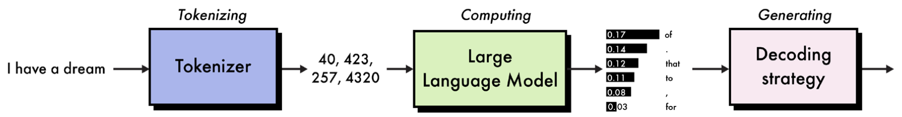
How to read this figure. Read left to right in three labelled stages. Tokenizing: the text "I have a dream" is turned into the numbers 40, 423, 257, 4320 (token IDs). Computing: the large language model takes those IDs and outputs a small bar chart, a probability for each possible next token ("of" has the tallest bar, 0.17; smaller bars for other candidates like "that", "to", a comma, "for"). Generating: a decoding strategy (greedy, sampling, and so on) picks one token from that distribution, here "of". To get the next word, the whole loop runs again with "of" added.
The basic inference process for a decoder-only model has three steps:
Steps 1 and 2 are expensive, but they are big matrix multiplications that can be done in parallel, so they keep GPUs and TPUs busy. (Serving engines call this phase prefill; you will meet the word in Plate 4.) The real problem is step 3: it is sequential by nature. To produce the next token, every earlier token must already exist. So the output grows one token at a time and the parallel power of the hardware sits mostly unused. Fixing this bottleneck is one of the main goals of inference optimization.
This section covers the common strategies that speed up inference and cut VRAM (video random-access memory, i.e. GPU memory) usage: a (static) KV cache, continuous batching, speculative decoding and optimized attention mechanisms.
Token IDs for the prompt come from Figure 8.1; the later words and the timing bars are modelled.
Antakshari: each singer must wait for the last word of the previous song before starting. Reading the first song (the prompt) can be done all at once by everyone in the room, but the chain of answers is strictly one after another. Adding more singers to the room does not make the chain faster.
Where it breaks: in antakshari each turn is a new person; in an LLM the same giant model runs every turn, re-reading its notes about all previous words each time, which is what the KV cache will fix.
In the prompt phase the GPU multiplies a whole matrix of tokens by the weights at once: lots of maths per byte of weights loaded, so the chip is busy (compute-bound). In the generation phase it multiplies one token's vector by the same huge weights: it still has to read every weight from memory but does very little maths with each, so the chip waits on memory (memory-bandwidth-bound). Beyond the book: this compute-bound vs memory-bound split is the standard way serving engineers explain why decode is slow and why batching helps.
A 200-token prompt and a 300-token answer (modelled). Steps 1–2 process the 200 prompt tokens in roughly one big parallel pass. Step 3 needs 300 separate forward passes, one per output token. Even if each pass is fast, the 300 passes in a row dominate the total time, which is why latency in chat apps scales with the length of the answer much more than the length of the question.
"Why is LLM generation slow even on a big GPU?" Say: the prompt is processed in parallel, but output tokens are autoregressive: each one depends on all the previous ones, so you need one full forward pass per token. Each pass reads all the weights but does little compute, so the GPU is underused. Every trick in this chapter either avoids repeated work (KV cache), packs more users into each pass (batching), or produces several tokens per pass (speculative decoding).
LLMs write token by token, and each new prediction needs the whole context so far. The book's example: to predict token 100, the model needs tokens 1–99. To predict token 101 it needs tokens 1–99 again, plus token 100. Recomputing the same information for tokens 1–99 at every step is very wasteful.
The key-value (KV) cache fixes this. Inside each self-attention layer, every token produces a key (what this token offers to be matched against) and a value (the information it passes on). The KV cache stores these key-value pairs. On the next step the model reads them from the cache instead of computing them again, which speeds up generation a lot.
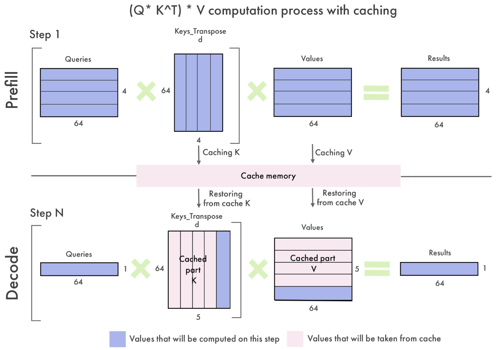
How to read this figure. The title is the attention formula, (Q × KT) × V. Top row, "Prefill", step 1: the prompt has 4 tokens, each a 64-number vector. Queries (4×64) are multiplied by the transposed keys (64×4), then by values (4×64), giving results (4×64). Everything is blue, meaning computed on this step. Arrows labelled "Caching K" and "Caching V" save the keys and values into the pink cache memory bar. Bottom row, "Decode", step N: now only one new token is processed, so the query is just 1×64. The key matrix is 64×5: four pink columns restored from the cache plus one blue column for the new token. Values are 5×64: four pink cached rows plus one new blue row. The result is a single 1×64 vector. The legend: blue = computed now, pink = taken from cache. So at decode time you compute one new key and value, not five.
So when a new token is generated, only that single token's key and value are computed and appended to the cache. The KV cache is an "immediate" optimization: every popular tool and library already implements it. Some implementations keep a separate KV cache per layer of the model.
The cache grows with the number of tokens (ntokens) and with several model dimensions: number of layers (nlayers), number of attention heads (nheads), the dimension of each head (dimhead), and the bytes per number (nbytes, e.g. 2 for 16-bit):
For a typical 7B-parameter model in 16-bit precision, the book says this goes above 2 GB for long sequences (more than 2,048 tokens). Bigger models, with more layers and larger embedding dimensions, need even more.
The formula is the book's. The model shapes are typical public configs (modelled; they assume every head keeps its own K and V). Bar = cache size vs an 80 GB GPU.
7B-class shape: 32 layers, 32 heads, head dimension 128, 2 bytes. Per token: 2 × 32 × 32 × 128 × 2 = 524,288 bytes = 0.5 MiB. At 2,048 tokens that is 1 GiB for one sequence; at 4,096 tokens, 2 GiB. Serve 16 users at 4,096 tokens each and the cache alone is 32 GiB, more than twice the ~13 GiB the 7B weights take in FP16. (My arithmetic with a common 7B shape; the book only states the "over 2 GB" ballpark.)
Because the normal KV cache grows at every step (it is dynamic), it blocks torch.compile, a PyTorch tool that fuses Python-level PyTorch code into fast, optimized GPU kernels (the small programs that run on the GPU). Compilers like fixed shapes. The static KV cache solves this by pre-allocating the cache at its maximum size from the start. With fixed shapes, the model can be compiled, which the book says gives up to a 4x speedup in the forward pass.
The book's recipe with the Hugging Face transformers library, using google/gemma-2b-it, in five steps (my shortened version, own names):
import torch
from transformers import AutoTokenizer, AutoModelForCausalLM
name = "google/gemma-2b-it"
tok = AutoTokenizer.from_pretrained(name)
llm = AutoModelForCausalLM.from_pretrained(name, device_map="auto") # 1. load
llm.generation_config.cache_implementation = "static" # 2. fixed-size cache
fast_llm = torch.compile(llm, mode="reduce-overhead", fullgraph=True) # 3. compile
dev = "cuda" if torch.cuda.is_available() else "cpu"
batch = tok("What is 2+2?", return_tensors="pt").to(dev) # 4. tokenize on GPU/CPU
out = llm.generate(**batch, do_sample=True, temperature=0.7, max_new_tokens=64) # 5. generate
print(tok.batch_decode(out, skip_special_tokens=True))device_map="auto" lets the library place layers on the available GPU(s).mode="reduce-overhead" targets the per-call overhead that dominates small decode steps; fullgraph=True asks for one whole graph with no fallbacks to plain Python.generate() with sampling (temperature 0.7, at most 64 new tokens), then batch_decode() turns IDs back to text. The book's output is a list holding the prompt plus the answer, something like "The answer is 4".Two caveats from the book: the static cache does not work with every architecture (check the transformers docs for the supported list). And managing the KV cache well is essential, because it can quickly exhaust GPU memory and so limit batch size. That pressure is what led to memory-efficient attention mechanisms (Plates 6–7).
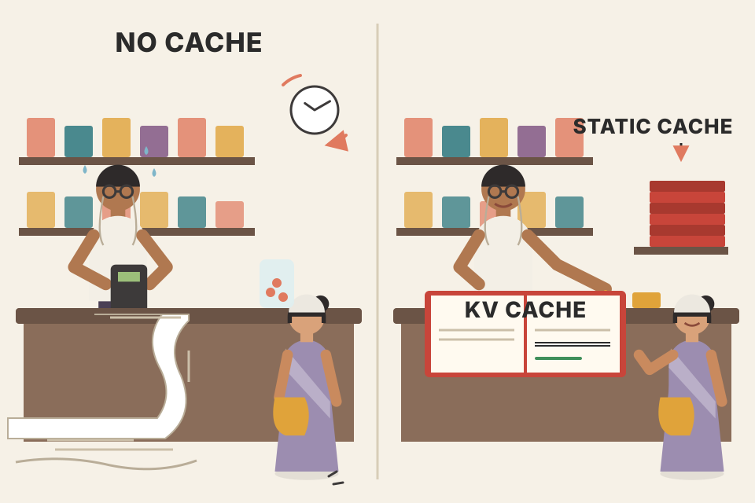
A kirana shop's credit notebook (khata). Without it, every time a regular customer buys something, the shopkeeper would re-add every purchase they ever made to know the balance. With the khata, he just reads the running total and adds today's item. The static cache is buying a notebook with all pages already numbered, instead of stapling in a fresh page each day; it wastes some paper but the routine never changes, so he can do it on autopilot (compile).
Where it breaks: a khata total is one number; the KV cache stores a full key and value vector per token, per layer, per head, so it grows big, as the calculator shows.
A token's key and value depend only on that token and the tokens before it (causal attention). Once computed, they never change, so caching them is safe. The trade is classic: spend memory to save compute. The cost appears as VRAM, which is why later techniques (PagedAttention, quantization) are really about making room for the cache.
Many newer models use grouped-query attention (GQA): several query heads share one key/value head, so the formula uses the number of KV heads (e.g. 8 instead of 32 in Llama 3 8B), cutting the cache about 4x. KV caches can also be quantized (e.g. FP8 KV cache in vLLM).
"What is the KV cache and what does it cost?" Say: during decoding each new token attends to all previous tokens; their keys and values never change, so we cache them and compute only the new token's K and V. It turns per-step work from re-processing the whole sequence into processing one token. The cost is memory: 2 × tokens × layers × heads × head-dim × bytes, per sequence, so with long contexts and many concurrent users the cache, not the weights, often decides how many requests a GPU can hold.
use_cache.Batching means processing several inference requests at the same time. It is the standard way to get high throughput: a bigger batch spreads the memory cost of the weights over more requests (the weights are read once per step for everyone) and sends more data to the GPU at once, saturating its parallel compute.
Decoder-only models make batching tricky because requests vary a lot, both in prompt length and in answer length. One request has a short prompt and needs a one-word answer; another sends a long context and wants several paragraphs back.
With traditional (static) batching you must wait for the longest request in the batch to finish before you can start a new batch. Meanwhile the GPU sits partly idle, waiting for one straggler. Continuous batching, also called in-flight batching, removes this idle time: as soon as one request finishes, a new one is fed into the batch.
One extra detail: new requests need prefill first (embedding and encoding their prompt, steps 1–2 of Plate 2). So the engine must periodically pause generation to run prefill for waiting requests. Finding the right balance between generating and prefilling needs tuning of a hyperparameter the book calls the waiting-served ratio (roughly: how many requests may wait, relative to those being served, before the engine stops to prefill them).
Continuous batching is built into most inference frameworks: Hugging Face's Text Generation Inference (TGI), vLLM and NVIDIA TensorRT-LLM.
Each coloured cell is one decode step of one request; hatched cells are idle slots. 12 requests with random answer lengths (modelled). Prefill pauses are ignored to keep it readable.
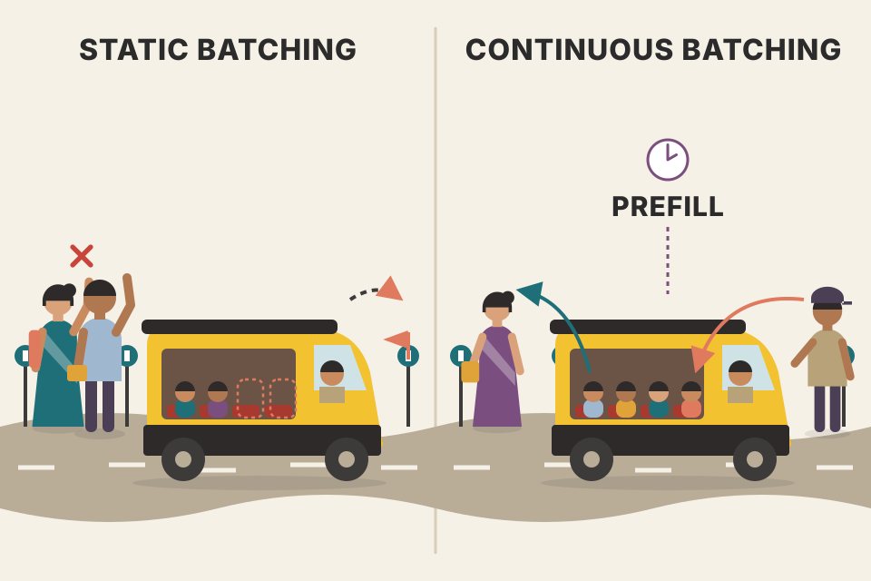
A shared auto-rickshaw (share auto) on a fixed route. Static batching: the driver waits until all four passengers reach the last stop before picking anyone new, so the seats ride empty after the first drop-off. Continuous batching: the moment one passenger gets off, the next person waiting on the roadside hops in. The auto is always full. The occasional stop to let someone climb in and settle is the prefill pause.
Where it breaks: a new passenger slows nobody else; in an LLM the prefill of a long prompt does briefly delay everyone's next token, which is why the waiting-served ratio needs tuning.
Engines that do this schedule at the level of single decode iterations, not whole requests: after every step they check who finished and who can join. That only works if each request's KV cache can be added and freed independently, which is why continuous batching pairs naturally with PagedAttention's block memory (Plate 6).
Batch of 4; answer lengths 10, 12, 60, 15 tokens (modelled). Static: the batch runs 60 steps; slot-steps used = 10+12+60+15 = 97 out of 4×60 = 240, so ~40% utilization. Three slots sit idle for most of the batch. Continuous: as soon as the 10-token request ends at step 10, a queued request starts in that slot, so the GPU stays near 100% busy while a queue exists.
"How would you raise throughput of an LLM API without new GPUs?" First answer: continuous (in-flight) batching. Static batches are held hostage by the longest generation; iteration-level scheduling swaps finished sequences out and new ones in each step, keeping the batch full. Mention the trade-off: prefill of newcomers interrupts decoding, so engines tune how often they prefill, and that it is on by default in vLLM, TGI and TensorRT-LLM.
Speculative decoding, also called assisted generation, is another strong technique. The key insight: even with continuous batching, token-by-token generation still does not fill the GPU's parallel capacity. Speculative decoding uses that spare capacity to predict several tokens at once with a smaller proxy (draft) model.
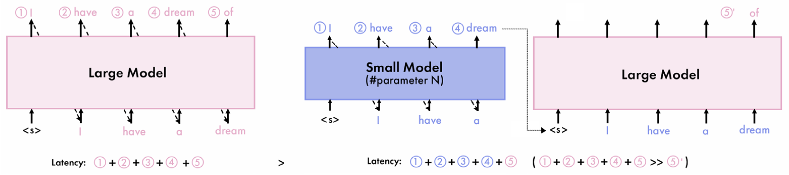
How to read this figure. Left (traditional): the pink "Large Model" box takes <s> and produces "I", then "have", "a", "dream", "of", circled 1 to 5, each one a separate expensive step; latency is the sum 1+2+3+4+5 of large-model steps. Right (speculative): the blue "Small Model (#parameter N)" quickly produces "I have a dream" (circled 1–4, cheap steps). The large model then takes <s> I have a dream all at once and, in that single pass, both confirms the four tokens and produces the next one, "of" (circle 5'). The latency line shows four cheap small-model steps plus one large-model step, which is much less than five large-model steps (the ">" sign between the two latency lines).
The general approach:
If the small model approximates the big one well, you get several tokens per big-model step and skip many expensive iterations. The speedup depends on how good the small model's guesses are: the book says a 90% match could give a 3–4X speedup.
Critical rule: both models must use the same tokenizer. Otherwise the draft's tokens don't line up with the big model's tokens and can't be compared.
Blue = draft guess, green = accepted, red = rejected, orange = the big model's own token from the same pass. Agreement is a per-token probability (modelled). "Big-model passes" is what the speedup saves.
The example uses two Qwen1.5 models from Alibaba Cloud: 1.8B as the main model and 0.5B as the draft. With more VRAM you could use a much bigger main model (14B, 32B, 72B or 110B). Here they are limited by the T4 GPU of free Google Colab; for the biggest gain the assistant should be much smaller than the main model.
main = AutoModelForCausalLM.from_pretrained("Qwen/Qwen1.5-1.8B-Chat", device_map="auto")
draft = AutoModelForCausalLM.from_pretrained("Qwen/Qwen1.5-0.5B-Chat", device_map="auto")
tok = AutoTokenizer.from_pretrained("Qwen/Qwen1.5-1.8B-Chat") # shared tokenizer
batch = tok("What is 2+2?", return_tensors="pt").to(dev)
out = main.generate(**batch, assistant_model=draft, # turns on speculative decoding
do_sample=True, temperature=0.7, max_new_tokens=64)The only new piece is assistant_model=draft in generate(). The book's answer is roughly "2 + 2 equals 4!". In this tiny example the speedup is not significant; it becomes clearly noticeable with bigger models.
Prompt lookup decoding is a variant for input-grounded tasks like summarization, where the output often repeats chunks of the prompt. Instead of a draft model, it uses n-grams (short word sequences) shared with the prompt as the candidate tokens. You enable it with prompt_lookup_num_tokens, e.g. generate(**batch, prompt_lookup_num_tokens=4).
Putting together the static KV cache with torch.compile, continuous batching and speculative decoding, the book says LLMs can get 2–4x or more inference speedups with no loss in quality.
Another way to build the small proxy is to fine-tune a small model together with the large one for maximum fidelity. A representative technique is Medusa, which adds dedicated speculation heads to the main model (extra output layers that each guess a token further ahead).
The book reports Medusa enabling a 70M-parameter model to closely approximate a 7B-parameter model on a range of tasks. Speculative decoding is natively supported by TGI.
A junior clerk and a senior officer at a government office. The junior quickly fills in the next five lines of a form from experience. The senior reads all five lines in one glance, ticks the first three that are right, crosses out the fourth and writes the correct fourth line himself. Checking five lines takes the senior about as long as writing one, so the work goes much faster, and the final form is exactly what the senior would have written.
Where it breaks: if the junior is bad at guessing (low agreement), the senior spends the same time and gains nothing; and if the junior uses different abbreviations (another tokenizer), the senior can't even compare.
Checking k tokens costs the big model about one forward pass, because the k positions are processed in parallel, just like a prompt. Decode is memory-bound (Plate 2), so processing 5 positions instead of 1 is nearly free. Because the big model's own prediction decides what is kept, the output follows the big model's distribution: that is why the book says "no loss in quality". The big model also always produces one token of its own at the first mismatch, so even a fully wrong draft still yields one token per pass.
Draft length k = 4, each guess accepted with probability 0.9 (modelled). Expected tokens per big-model pass = 1 + 0.9 + 0.9² + 0.9³ + 0.9⁴ ≈ 4.1 (the accepted run plus the big model's own token). At agreement 0.5 it drops to ≈ 1.9. So the 3–4X figure the book quotes for ~90% match is plausible once you subtract the draft model's own cost. (Formula is the standard geometric-series estimate, beyond the book.)
"How does speculative decoding speed things up without changing outputs?" Say: a cheap draft model proposes k tokens; the target model scores all k in a single forward pass, accepts the longest prefix it agrees with and adds its own next token. Decode is memory-bound so verifying k tokens costs about one step. Speedup depends on acceptance rate; draft and target must share a tokenizer. Mention prompt-lookup for RAG or summarization, where answers copy from context, which is directly useful for a RAG memory system.
The Transformer is built on the attention mechanism, and attention's cost grows quadratically with the number of input tokens (the sequence length): double the tokens and the token-pair comparisons roughly quadruple. For long sequences this is very inefficient, and it is exactly where the KV cache can blow up in size (Plate 3). The book presents two answers: PagedAttention (this plate) and FlashAttention-2 (next plate).
PagedAttention, introduced by Kwon, Li, et al. (2023), attacks the memory side. It borrows the idea of virtual memory and paging from operating systems:
Three payoffs follow:
The vLLM library had the first implementation of PagedAttention. It has since been added to TGI and TensorRT-LLM as well.
Each square is one token slot of KV-cache memory. Filled = holds a real token's K and V; hatched red = reserved but empty (waste). 5 requests with random lengths; "sampled ×2" requests share their prompt blocks in paged mode. All numbers modelled, not the paper's.
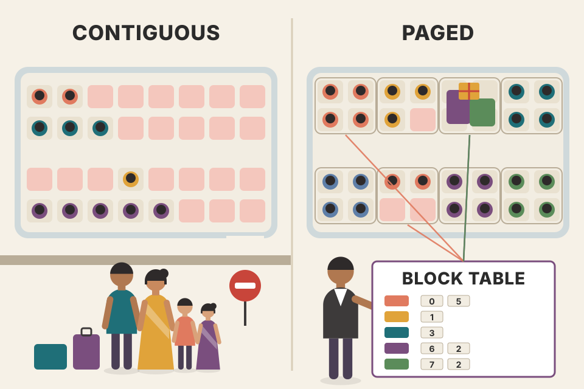
Railway reservation, two ways. Contiguous: every family must get one unbroken row of seats sized for the biggest family that might come, so a couple sits in a row of eight with six seats empty, and a new family can't board even though the coach is half empty in scattered spots. Paged: the coach is split into 4-seat bays; a family gets as many bays as it needs, anywhere in the train, and the TTE's chart (the block table) tells you where each member sits. Two families travelling to the same wedding can share the bay holding their common luggage (the shared prompt).
Where it breaks: people can't be "read" from scattered bays at the same speed as from one row; the GPU kernel must do extra lookups through the block table, which is why a special kernel was needed.
Without paging, an engine does not know how long an answer will be, so it reserves memory for the maximum length up front. Most of that reservation is never used (internal fragmentation), and the free gaps between requests are often too small for a new one (external fragmentation). Paging allocates one small block at a time, only when the previous block is full, so the waste is at most one partly-filled block per sequence. A block table per sequence maps "logical block 0, 1, 2…" to physical block addresses, exactly like an OS page table. Sharing works by letting two sequences' tables point at the same physical block; a block is copied only if one of them needs to write into it (copy-on-write). The fragmentation terms, block table and copy-on-write are from the vLLM paper, beyond the book's text.
Reserve 32 token slots per request; four requests actually use 9, 14, 5 and 27 tokens (modelled). Contiguous: 4 × 32 = 128 slots reserved, 55 used, 73 wasted (57%). Paged with 4-token blocks: 3 + 4 + 2 + 7 = 16 blocks = 64 slots, 55 used, 9 wasted (14%). The freed 64 slots can hold two more 32-token requests, so the batch grows from 4 to about 6, which is where the throughput gain comes from.
"Why is vLLM fast?" Say: PagedAttention. The KV cache is stored in fixed-size blocks with a per-sequence block table, like virtual memory, so the engine allocates on demand instead of reserving max length. Waste drops from large fragmentation to under one block per sequence, so many more sequences fit in a batch, and prompt blocks can be shared across parallel samples or beams. The authors report up to 55% less memory overhead and up to 2.2x throughput. A backend engineer can tie it to OS paging and to slab allocators.
FlashAttention-2, developed by Tri Dao (2023), is the other popular option. Where PagedAttention fixes how the cache is stored, FlashAttention-2 fixes how attention is computed, targeting both the quadratic runtime and the memory limits of standard attention. Its key ideas:
One row of 8 attention scores (modelled), read in blocks of 2 as if each block were all that fits in SRAM. Only the running max m and running sum ℓ are kept between blocks; at the end the result equals an ordinary softmax over the full row.
Unlike PagedAttention (which you get by using an engine such as vLLM), FlashAttention-2 is easy to switch on in the transformers library through the attn_implementation argument, in two steps:
# 1. install the kernel package without pulling in its build dependencies
pip install flash-attn --no-build-isolation
# 2. ask for it when loading the model (book's example: Mistral-7B-Instruct-v0.3)
from transformers import AutoModelForCausalLM
llm = AutoModelForCausalLM.from_pretrained(
"mistralai/Mistral-7B-Instruct-v0.3",
attn_implementation="flash_attention_2", # swap the attention kernel
)--no-build-isolation stops pip from creating a fresh build environment and installing dependencies into it, so the package compiles against the PyTorch you already have. The attn_implementation value tells transformers which attention kernel to plug into every layer; the rest of your code is unchanged.
The book closes this part by noting that everything so far (KV cache, batching, speculative decoding, better attention) makes the model process tokens more efficiently. Next comes spreading the model and its computation across several GPUs.
A chef with a tiny counter and a big storeroom. The naive way: chop all the onions, carry the full tray back to the storeroom, fetch it again to fry, carry it back, fetch it again to plate. FlashAttention: bring a handful of onions to the counter, chop, fry and plate that handful in one go, keep a small note of "how much salt so far", then fetch the next handful. Far fewer trips to the storeroom.
Where it breaks: a chef can taste the final dish and fix the salt; softmax needs an exact correction factor when a bigger maximum shows up later, which is what the running max and rescaling do.
For long sequences, standard attention writes an n×n score matrix to HBM, reads it back to softmax it, writes the probabilities, reads them again to multiply by V. These round-trips, not the arithmetic, dominate time. Tiling keeps each block of Q, K and V in SRAM through the whole chain (scores → softmax → weighted sum), so the n×n matrix never exists in HBM. Online softmax makes that legal: when a new block has a larger max m′, the old partial sum and partial output are multiplied by em−m′ to rescale them. Beyond the book: the original FlashAttention (2022) introduced tiling and recomputation; version 2 improved how work is split across GPU threads for higher speed.
Sequence of 8,192 tokens, 32 heads, FP16 (modelled). One full attention score matrix per head is 8,192 × 8,192 × 2 bytes = 128 MiB; for 32 heads, 4 GiB per layer that standard attention would materialize. FlashAttention never writes it: it keeps blocks of, say, 128 × 128 scores (32 KiB) in SRAM at a time. The output is identical.
"PagedAttention vs FlashAttention?" Say: they solve different problems and are used together. PagedAttention is a memory-management scheme for the KV cache across requests (fragmentation, sharing). FlashAttention is a compute kernel that is IO-aware: it tiles Q, K, V into SRAM and uses online softmax, so it never stores the n×n matrix, giving exact attention with fewer memory transfers. One raises batch size; the other makes each attention call faster and lighter.
Model parallelism spreads an LLM's memory and compute needs over several GPUs. Two benefits: you can train and run models too large for one device, and you can raise throughput (tokens per second).
There are three main approaches, each cutting the model's weights and computation differently:
| Approach | What is split | Each GPU holds | Main cost |
|---|---|---|---|
| Data parallelism (DP) · Plate 9 | the data (requests / batch) | a full copy of the model | memory: the whole model on every GPU |
| Pipeline parallelism (PP) · Plate 10 | the model by layers (depth) | a consecutive group of layers | idle time: pipeline bubbles |
| Tensor parallelism (TP) · Plate 11 | each layer's weight matrices (width) | a slice of every layer | communication: needs fast interconnects |
All three were invented for training. For inference you reuse them while caring only about the forward pass (no gradients, no backward pass, no weight updates).
A wedding catering job too big for one cook. Data parallelism: hire four cooks who each know the whole menu and give each a quarter of the guests. Pipeline parallelism: a line where cook 1 makes the dal, cook 2 the sabzi, cook 3 the rotis, cook 4 plates; each plate passes down the line. Tensor parallelism: all four cooks work on the same giant pot of biryani at once, each stirring one quarter, then combine.
Where it breaks: cooks can improvise; GPUs must exchange exact numbers at exact moments, and the cost of those exchanges decides which split wins.
"How do you serve a model that doesn't fit on one GPU?" Say: first quantize if quality allows (Plate 13); otherwise shard it. Tensor parallelism splits each layer's matrices across GPUs in one node (needs NVLink-class bandwidth, gives lowest latency); pipeline parallelism splits layers across GPUs or nodes (least memory per GPU, but bubbles); data parallelism replicates a model that already fits, to serve more requests. Real deployments combine them.
Data parallelism (DP) is the simplest kind of model parallelism. You make copies (replicas) of the model and put one on each GPU. Each GPU processes a different subset of the data at the same time.
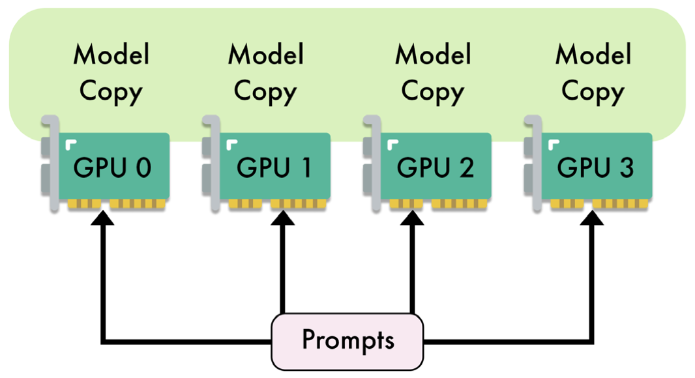
How to read this figure. Four GPU cards (GPU 0–3) sit side by side. Above each is the label "Model Copy": every GPU holds the entire model, nothing is cut. At the bottom, a single "Prompts" box sends arrows to all four GPUs: the incoming work is divided among them, and each GPU answers its own share independently.
Limits. DP is limited by model size and by communication overhead between GPUs. Replicating all parameters on every GPU is inefficient: it only works if the model fits on one GPU, and the copy then leaves less room for input data, which limits the batch size. For big models or tight memory this is a serious drawback. So in practice DP is mainly used for training, while pipeline and tensor parallelism are preferred for inference.
Four identical UPI counters at a busy petrol pump, each with the full app and QR code. Customers are split among them; four people pay at once. But every counter needs its own full setup, and if the app itself were too big for one phone, copying it four times would not help at all.
Where it breaks: petrol-pump counters never talk; in training, GPUs must average gradients every step, which is the communication overhead.
DP divides the work, never the model. Memory per GPU = full weights + that GPU's KV cache and activations. That's why it does nothing for a model that doesn't fit. In inference there's no gradient sync at all, so serving replicas behind a load balancer is really just DP; the book's point is that it wastes memory compared with the alternatives when the model is large.
A 7B model in FP16 takes ~14 GB (modelled: 7 × 10⁹ × 2 bytes). On four 24 GB GPUs with DP, each GPU holds 14 GB of weights and has ~10 GB left for KV cache, so 4 × 10 = 40 GB of cache in total, but 3 × 14 = 42 GB is spent on duplicate weights. A 70B FP16 model (~140 GB) cannot use DP on these GPUs at all.
"Is running 4 replicas behind a load balancer model parallelism?" Say: yes, it's data parallelism for inference: it scales throughput and cuts queueing latency, needs no inter-GPU communication at inference time, but every GPU must fit the full model and each replica's free memory limits its batch. That's the right choice for small models (say a 7B voice-agent model) and the wrong one for models that don't fit.
Pipeline parallelism (PP) was introduced by Huang et al. in the GPipe paper (2019) as a way to spread the computational load of training and running large networks across GPUs. Unlike DP, which copies the whole model to every GPU, PP partitions the model's layers across GPUs: each GPU owns one portion, which reduces the memory burden on each one.
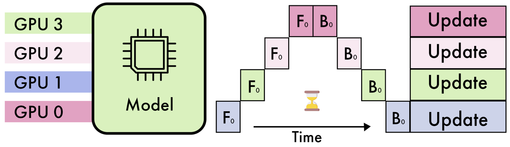
How to read this figure. Left: one model, its layers coloured in four bands, one band per GPU (GPU 0 at the bottom holds the first layers). Right: time runs left to right. The F0 boxes are the forward pass of batch 0: it climbs a staircase, GPU 0 first, then GPU 1, 2, 3, because each GPU needs the previous one's output. Then the B0 boxes (backward pass, training only) walk back down from GPU 3 to GPU 0. Finally all GPUs do their Update. The big empty area with the hourglass is the problem: at any moment only one GPU is working and the other three wait. That idle space is the bubble.
In a typical four-way split, the model is cut into four segments: maybe the first 25% of layers on GPU 1, the next 25% on GPU 2, and so on. In the forward pass, each GPU computes its layers' activations and passes them to the next GPU. In training, the backward pass runs the same chain in reverse, sending gradients back. The number of GPUs is called the degree of parallelism.
Main advantage: a big cut in the memory each GPU needs. Main problem: the pipeline is sequential, which creates pipeline bubbles: periods where some GPUs are idle, waiting for activations from earlier layers. Bubbles lower overall efficiency.
Micro-batching was developed to shrink the bubbles. The input batch is split into smaller sub-batches; the next sub-batch can enter the pipeline before the previous one has finished, so GPUs stay busier.
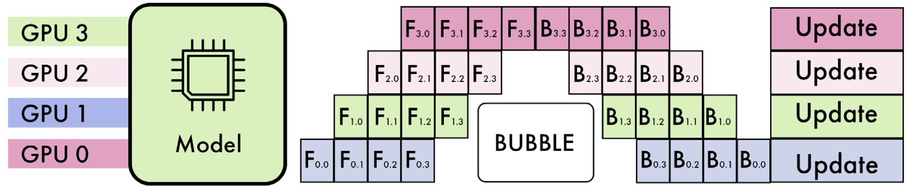
How to read this figure. Labels are Fstage,micro-batch: F1,2 means "stage 1 (GPU 1) doing the forward pass of micro-batch 2". The pipeline has four stages (F0–F3) and the batch is split into four micro-batches (0–3). GPU 0 runs F0,0, F0,1, F0,2, F0,3 one after another. As soon as F0,0 is done, GPU 1 starts F1,0 while GPU 0 moves on to F0,1, and so on up the staircase. After its forwards, GPU 0 waits for the others to finish theirs before running backward passes in reverse order (B0,3, B0,2, B0,1, B0,0). The white BUBBLE box marks the remaining idle region: smaller than in Figure 8.5, but not gone.
Teal = forward, plum = backward, hatched = idle. Every stage takes one time unit per micro-batch (modelled). Bubble fraction for this simple schedule = (stages − 1) / (micro-batches + stages − 1), the standard GPipe estimate (beyond the book).
Where it's implemented. Distributed training frameworks: Megatron-LM, DeepSpeed (ZeRO), and PyTorch via the dedicated PiPPy (Pipeline Parallelism for PyTorch) library. For inference, at the time of writing, only some frameworks, such as TensorRT-LLM, support pipeline parallelism.
A Mumbai dabbawala relay. One team collects tiffins, the next sorts them at the station, the next rides the train, the last delivers. If they move one giant crate at a time, three teams stand idle while one works. Split it into four smaller crates and the collector starts on crate 2 while the sorter handles crate 1: everyone is busy most of the time. The first few minutes (only the collector busy) and the last few (only the deliverer busy) are the bubble that never fully goes away.
Where it breaks: dabbawalas can overtake each other; in a pipeline, stage 3 strictly cannot start a micro-batch before stage 2 hands it over.
With p stages and m micro-batches, a forward-only run takes m + p − 1 time steps instead of m, and p − 1 of those steps at the start and end have idle GPUs. More micro-batches dilute that fixed ramp-up and ramp-down. In LLM decoding it is harder: each new token must go through all stages before the next token of the same sequence can start, so a single sequence keeps only one stage busy; you need many concurrent sequences (acting as micro-batches) to fill the pipe. Communication is light (only the activations at a stage boundary), so PP works even over slower links, unlike TP.
4 GPUs, forward only, each stage 1 time unit per micro-batch (modelled). One whole batch: 4 steps, each GPU busy 1 of 4 → 75% bubble. Four micro-batches: 4 + 4 − 1 = 7 steps, each GPU busy 4 of 7 → 43% bubble. Sixteen micro-batches: 19 steps, busy 16 of 19 → 16% bubble.
"What is a pipeline bubble and how do you reduce it?" Say: with layers split across GPUs, later stages wait for earlier ones at the start and earlier ones wait at the end, so GPUs sit idle. Splitting the batch into micro-batches lets stages work on different micro-batches at once; the bubble fraction is roughly (p−1)/(m+p−1). PP gives the biggest memory reduction per GPU and needs little bandwidth, but costs efficiency and latency.
Tensor parallelism (TP) was introduced by Shoeybi, Patwary, Puri et al. in the Megatron-LM paper (2019). Where PP cuts the model between layers, TP cuts inside layers: it splits the weight matrices of each layer. GPUs then compute at the same time, which reduces memory bottlenecks and increases speed.
Large matrices, such as the weights of MLPs (the feed-forward blocks) or the attention heads in self-attention layers, are partitioned across GPUs. Each GPU holds one slice and computes only on that slice.
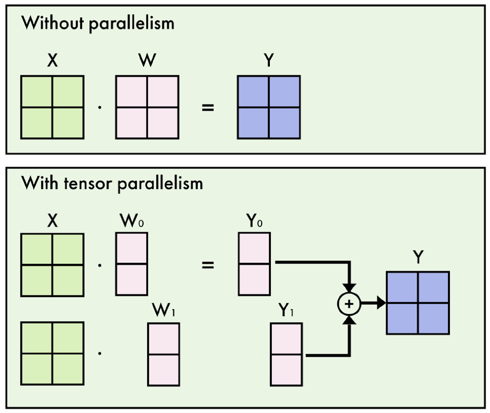
How to read this figure. Top: on one GPU, input X (green) times weight W (pink) gives output Y (blue). Bottom: W is cut column-wise into W0 and W1, one per GPU. The same X is given to both GPUs. GPU 0 computes X·W0 = Y0, GPU 1 computes X·W1 = Y1, at the same time. The circled + is the communication step that combines the two partial results into the full Y.
Step by step for an MLP layer: (1) the weight matrix is divided so each GPU has a subset of the weights; (2) the inputs are broadcast to all GPUs; (3) each GPU computes its output independently; (4) the partial results are combined with an all-reduce operation (a collective where every GPU contributes its piece and every GPU receives the combined result) to form the final output.
Attention is a natural fit. Attention already has many independent heads, so each GPU can simply compute a subset of heads. This lets the model handle large sequences more effectively and makes TP more efficient than pipeline parallelism, which must wait for previous layers to finish.
X is 2×4, W is 4×4 (small integers, modelled). Each GPU owns the columns of W shown in its colour and computes those columns of Y. Gathering the slices gives exactly the single-GPU answer.
TP doesn't apply to every layer. LayerNorm and Dropout depend on the whole input, so they can't be partitioned efficiently by weights and are usually replicated on every device. But they can be split along the sequence dimension instead: different GPUs compute these layers on different slices of the input sequence. This is sequence parallelism. It applies to only a few specific layers but gives extra memory savings, especially for very long input sequences.
The catch: bandwidth. TP needs high-speed interconnects between devices to keep communication overhead low, which makes it impractical across nodes with insufficient interconnect bandwidth.
Where it's implemented. Training: Megatron-LM, DeepSpeed (ZeRO), and PyTorch (FSDP, Fully Sharded Data Parallel). Inference: available in most frameworks, like TGI, vLLM and TensorRT-LLM.
A cricket scorer's team at a big match. Instead of one person adding up the whole scoresheet, four people each add up the runs of a quarter of the overs, all at once, then shout their subtotals and everyone writes down the grand total. The work per person shrinks, but they must be close enough to shout to each other many times per over.
Where it breaks: scorers combine once per innings; TP combines at every layer for every token, so the "shouting distance" (NVLink inside one server) really matters.
In an MLP, Megatron-style TP splits the first weight matrix by columns and the second by rows, so each GPU can run both matrices on its own slice and only one all-reduce is needed per MLP block (and one per attention block). With 32 layers, a forward pass needs about 64 all-reduces; each moves an activation tensor, which is why TP is kept within a node (fast links) and rarely across nodes. The column-then-row pattern is from the Megatron paper, beyond the book's text.
A 70B model in FP16 is ~140 GB (modelled). TP across 4 × 80 GB GPUs: each holds ~35 GB of weights (a quarter of every layer) plus room for KV cache, and each token's forward pass is computed by all four at once, so per-token latency drops roughly toward a quarter of the compute time, minus communication. With PP across the same 4 GPUs the memory is similar, but each token still walks through the GPUs one by one.
"Tensor vs pipeline parallelism for serving?" Say: TP splits every layer, so all GPUs work on each token simultaneously, which lowers latency, but it needs an all-reduce per block, so it wants NVLink inside one node. PP splits by layers: cheap communication, works across nodes, maximum memory saving, but bubbles and higher latency. Typical setup: TP inside a node, PP across nodes. LayerNorm and Dropout can't be weight-split, so they're replicated or split by sequence (sequence parallelism).
Data, tensor and pipeline parallelism are orthogonal: they cut along different directions, so they can be combined. Figure 8.8 shows one model split each way.
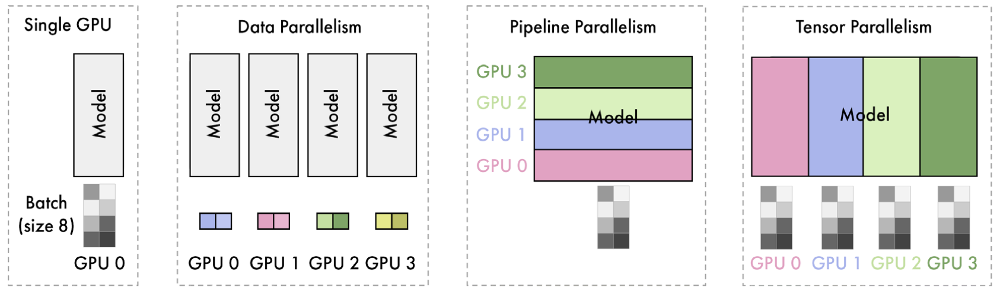
How to read this figure. Four panels, same model, same batch of size 8 (the grey squares). Single GPU: the whole model and the whole batch on GPU 0. Data parallelism: four full model copies, and the batch is split into four pieces of 2 (coloured pairs), one per GPU. Pipeline parallelism: one model sliced horizontally into four bands of layers (GPU 0 at the bottom), and the full batch of 8 flows through all of them. Tensor parallelism: one model sliced vertically, so every layer is cut into four column slices, and each GPU sees the full batch of 8. So DP splits the data; PP and TP split the model, in two different directions.
Combining them lets each one cover the others' weaknesses:
Balancing these trade-offs and mapping a given architecture onto the available accelerators is, in the book's words, a key challenge in deploying LLMs.
Weights = parameters × bits ÷ 8, spread over TP × PP GPUs; each DP replica repeats that. The "left for KV cache" figure ignores activations and framework overhead (modelled). Trade-off notes paraphrase the book.
Running a large exam centre. Pipeline: hall A checks admit cards, hall B seats students, hall C hands out papers (stages). Tensor: inside hall C, four invigilators split the rows and hand out papers at once. Data: open a second identical exam centre across town for more students. You choose the mix based on how many rooms (GPU memory) and how fast you need things (latency).
Where it breaks: exam centres don't need to talk mid-exam; TP groups talk constantly, so they must sit in the same building (node).
Total GPUs = DP × PP × TP. TP sets how fast one token is computed and needs the fastest links, so it usually stays ≤ the GPUs in one server (often 8). PP extends memory across servers with cheap activation hand-offs. DP is added last to multiply throughput. The "TP within node, PP across nodes" rule of thumb is common practice, beyond the book.
"You have two nodes of 8 × 80 GB GPUs and a 405B model. How do you shard it?" Say: 405B in BF16 is about 810 GB, too much for 8 × 80 = 640 GB, so you need both nodes: TP = 8 inside each node over NVLink, PP = 2 across the nodes, leaving ~400 GB per node minus weights for KV cache. If quality allows, FP8 or 4-bit weights could fit it in one node, which removes the cross-node pipeline. Then add DP replicas for throughput.
Quantization means representing a network's weights and activations with lower-precision data types. For LLMs it is mostly about lowering the precision of the weights (and activations).
By default, weights are stored as 16-bit or 32-bit floating-point numbers (FP16 or FP32). That is precise, but costs memory and compute. Quantization shrinks the memory footprint and speeds up inference.
A striking extra benefit: larger models (over 30B parameters) quantized to 2- or 3-bit can beat smaller 7B–13B models in quality while using a comparable amount of memory. In other words, "a big model squeezed hard" can be better than "a small model kept precise".
The book's roadmap for this part: the concepts of quantization (Plates 14–16), GGUF with llama.cpp (Plate 17), GPTQ and EXL2 (Plate 18), and other techniques (Plate 19). Besides the book's code, you can quantize your own models with AutoQuant (bit.ly/autoquant), a Google Colab notebook.
Size = parameters × bits per weight ÷ 8, weights only (no KV cache, no runtime overhead). Effective bits for GGUF types include their per-block scales (approximate, beyond the book). The 2.55-bit row is the book's EXL2 example. "Fits?" leaves ~10% headroom (modelled).
Rounding the prices in a kirana shop's register. Writing ₹47.8362 for every item is precise but takes a big notebook; writing ₹48 is almost as useful and takes far less ink. Quantization writes each weight with fewer digits.
Where it breaks: a few items (the outliers of Plate 16) are priced in lakhs; if you round everything on the same scale, all the small items collapse to ₹0.
Decoding is memory-bandwidth-bound (Plate 2): each token reads every weight. Halving the bytes per weight roughly halves the bytes read per token, so quantization speeds up generation as well as saving space, as long as the de-quantization maths is cheap. The quality cost comes from rounding error, which large models tolerate better because each weight matters less.
Llama-class 70B (modelled): FP16 = 70 × 2 = 140 GB; 8-bit = 70 GB; 4-bit ≈ 35 GB; 2.55-bit ≈ 22.3 GB, which is why the book says EXL2 lets 70B models run on a single 24 GB GPU. A 13B model in FP16 is 26 GB, so a 2.55-bit 70B is smaller than an FP16 13B: that's the "big model squeezed hard" trade.
"How much memory do I need to serve a 13B model?" Say: weights = params × bytes: 26 GB at FP16, 13 GB at 8-bit, ~7 GB at 4-bit; then add KV cache (grows with context × concurrent users) and some runtime overhead. Quantization is the first lever because decode is memory-bound, so fewer bytes also means faster tokens. Then mention that 4-bit is usually near-lossless for big models, and below 3-bit you test carefully.
Every technique in the rest of this chapter (absmax, zero-point, LLM.int8(), GGUF, GPTQ, EXL2, AWQ) is a form of PTQ: you start from a finished model.
The data type matters a lot. Deep learning commonly uses FP32, FP16 (half precision) and BF16 (brain floating point). Each gives a fixed number of bits to three parts:
The value is rebuilt as (−1)sign × baseexponent × significand (base 2, with the exponent stored with an offset called the bias).
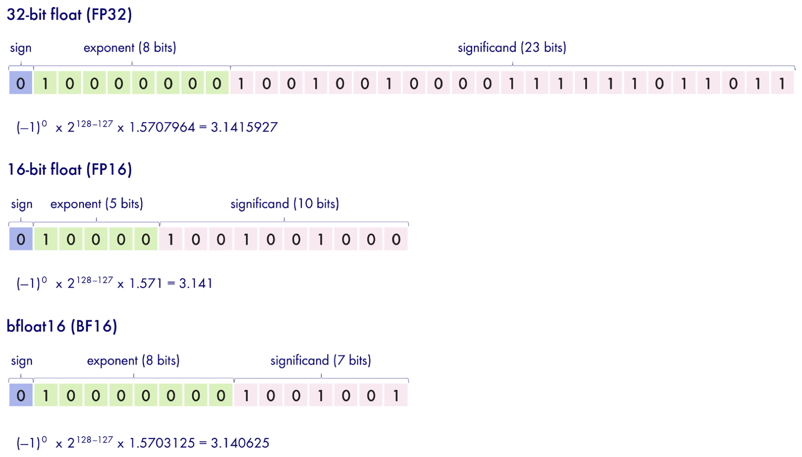
How to read this figure. Each strip is the number π ≈ 3.1415926535 stored in one format. Blue = sign bit (0, positive). Green = exponent bits. Pink = significand bits. FP32 (1 + 8 + 23 bits) rebuilds π as 21 × 1.5707964 = 3.1415927, accurate to 7 digits. FP16 (1 + 5 + 10) keeps fewer significand bits and gives 3.141. BF16 (1 + 8 + 7) keeps FP32's full 8-bit exponent but only 7 significand bits, giving 3.140625. Note that BF16 and FP32 share the same exponent bits, which is the whole point of BF16. (Small detail: the FP16 line reuses the "128−127" exponent annotation; FP16's exponent bias is actually 15, so its stored exponent is 16 − 15 = 1. The result, 21, is the same.) The book's text refers to this as "Figure 7.7"; it means this figure.
| Format | Bits | Sign / exponent / significand | π stored as | Trade-off |
|---|---|---|---|---|
| FP32 | 32 | 1 / 8 / 23 | 3.1415927 | high precision, most memory |
| FP16 | 16 | 1 / 5 / 10 | 3.141 | half the memory; more precision than BF16 but much smaller range |
| BF16 | 16 | 1 / 8 / 7 | 3.140625 | half the memory; FP32's range, less precision |
FP32 is precise but heavy; FP16 and BF16 halve memory at the cost of precision. Neural networks prefer more range over more precision, which is why BF16 is the most popular data type when the hardware supports it. For example, NVIDIA's Ampere architecture (A100, A30, etc.) supports BF16, while older generations like Turing (T4, T40, etc.) do not. (So on a free Colab T4 you fall back to FP16.)
Computed live in your browser with IEEE rounding to nearest. Try 70000: FP16 overflows to infinity (max ≈ 65,504) while BF16 still stores it, because BF16 has FP32's 8-bit exponent. Try 0.00001: FP16 loses precision (it becomes a "subnormal" number), BF16 keeps the scale but few digits.
Writing distances on a road sign. The exponent is the unit (metres, kilometres, thousands of km); the significand is the digits. FP16 has many digits but only a few units, so it can't write "Delhi to Kanyakumari in millimetres". BF16 has every unit FP32 has but only two or three digits: "about 2,800 km". For neural nets, being able to write both tiny and huge values matters more than the exact last digit.
Where it breaks: a road sign rounding doesn't compound; in a network millions of rounded numbers are multiplied and added, so errors can accumulate, which is why accumulation is often done in FP32.
Gradients and activations in big models span many orders of magnitude. With FP16's 5-bit exponent, tiny gradients underflow to zero and large activations overflow to infinity, so FP16 training needs tricks like loss scaling. BF16 sidesteps this by keeping FP32's exponent; it is literally FP32 with the last 16 bits dropped, so converting between them is trivial.
"FP16 or BF16?" Say: both are 16 bits. FP16 has 5 exponent / 10 mantissa bits: more precision, max ≈ 65,504, so it can overflow. BF16 has 8 / 7: FP32's range, less precision. Deep learning prefers range, so BF16 is the default on Ampere-or-newer GPUs (A100, H100); on Turing cards like the T4 you use FP16. And PTQ converts a trained model with no retraining; QAT trains with quantization in the loop for better quality at more cost.
We are not limited to FP32, FP16 and BF16. INT8 (8-bit integers, only 256 possible values) cuts the footprint further. Two naïve (simple) techniques convert FP32/FP16/BF16 weights to INT8: absolute maximum (absmax) quantization and zero-point quantization.
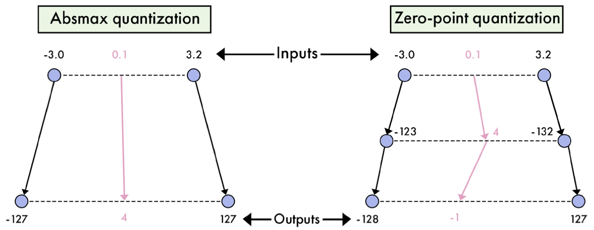
How to read this figure. The weights range from −3.0 to 3.2, and we follow one weight, 0.1 (pink). Left (absmax): one step. Divide by the largest absolute value (3.2) and multiply by 127: −3.0 goes to about −119 (the figure simply marks the ends of the output range, −127 and 127), 3.2 → 127, and 0.1 → 4. Zero stays exactly at zero; the range is symmetric. Right (zero-point): two steps. First scale by 255 / 6.2 ≈ 41.13: −3.0 → −123, 0.1 → 4, 3.2 → 132 (the figure labels it "−132"; the scaled value is +132). Then shift everything by the zero-point (−5) so the minimum lands on −128 and the maximum on 127: 0.1 ends at −1. The full 256-value range is used, even though the input range is lopsided.
Map the weights X to [−127, 127] by dividing by the largest absolute value and scaling by 127:
(The book's text points to "Figure 8.8" for this example; it is Figure 8.10.) In PyTorch it's three lines: compute a scale = 127 / max|X|, multiply and round, cast to int8:
import torch
def absmax_int8(w):
s = 127 / w.abs().max() # one scale for the whole tensor
return (w * s).round().to(torch.int8), s # keep s to dequantize: w ≈ q / sZero-point handles asymmetric distributions (more room on one side of zero than the other). It maps weights to the full range [−128, 127] by adding a zero-point offset:
def zeropoint_int8(w):
span = (w.max() - w.min()) or 1 # guard: avoid dividing by zero
s = 255 / span
zp = (-s * w.min() - 128).round() # shift so min → −128
q = torch.clip((w * s + zp).round(), -128, 127)
return q.to(torch.int8), s, zp # dequantize: (q − zp) / sThe clip keeps rounding from spilling past the int8 limits, and the guard handles a tensor whose values are all equal (zero range).
Defaults reproduce the book's example (0.1 in [−3.0, 3.2] → 4 and −1). The weight is clamped to the range. Lower bit widths use the same formulas with 2b−1−1 and 2b−1 in place of 127 and 255 (beyond the book). Ticks = the values that can be represented after dequantization.
A bus with 255 seat numbers. Absmax puts the conductor's seat (zero) in the exact middle and seats passengers by how far left or right they are; if everyone's on the right, the left half of the bus rides empty. Zero-point moves the "middle" so the first passenger gets seat 1 and the last gets seat 255: every seat can be used.
Where it breaks: if one passenger is a giant (an outlier), the seats get stretched so far apart that all normal-sized people end up in the same seat.
Both methods are linear: they lay 256 evenly spaced points over the range and snap each weight to the nearest one. The step size is range ÷ 255 (zero-point) or 2·max|X| ÷ 254 (absmax). Rounding error is at most half a step. Absmax wastes part of the grid when the range is lopsided but keeps 0 exactly representable with no offset, which makes the matrix maths simpler. Zero-point uses the full grid at the cost of carrying the offset around.
Same range, weight 2.0 (modelled). Absmax: round(127 × 2.0 / 3.2) = round(79.4) = 79 → 3.2 × 79 / 127 = 1.9906 (error 0.0094). Zero-point: round(41.13 × 2.0 − 5) = round(77.26) = 77 → (77 + 5) / 41.13 = 1.9937 (error 0.0063). Zero-point's step (6.2/255 ≈ 0.0243) is a little finer than absmax's (6.4/254 ≈ 0.0252) here, because none of its grid is wasted below −3.0.
"Explain INT8 quantization." Say: pick a scale that maps the float range onto 256 integers, round, store the int8 values plus the scale (and an offset for asymmetric/zero-point). Dequantize by reversing the scale. Absmax is symmetric around zero (range [−127, 127]); zero-point is asymmetric and uses all 256 levels. Error is at most half a step, so it depends on the range, which is why outliers hurt.
Naïve methods struggle with outlier features in LLMs: extreme values, about 0.1% of all values, that stretch the range so much that every other value loses precision. You can't just discard them, because that would hurt the model's performance.
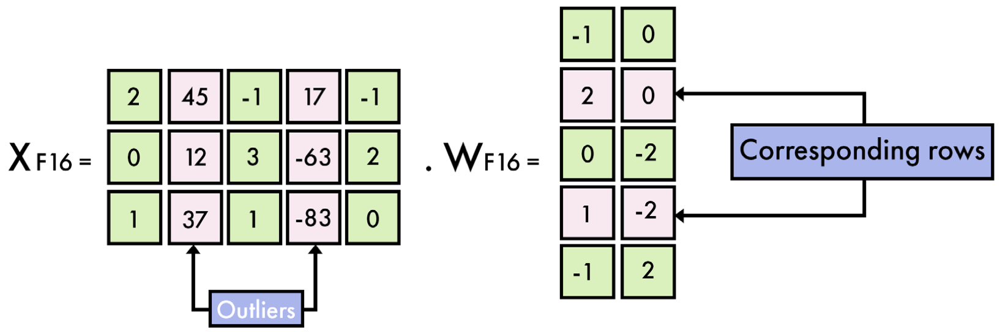
How to read this figure. XF16 is a 3×5 matrix of 16-bit hidden states. Most numbers (green) are small: 2, −1, 0, 3, 1. Two columns (pink) hold huge values: 45, 12, 37 and 17, −63, −83. These are the outlier features. X is multiplied by WF16 (5×2); the pink "corresponding rows" of W (rows 2 and 4) are the ones that multiply those outlier columns. The point: outliers sit in whole feature columns, so you can pull out those columns of X and the matching rows of W and handle them separately.
Row of 8 hidden-state values (modelled, like Figure 8.11's green cells) plus one outlier. Each box shows the original value, then its value after quantize → dequantize. Watch the small values collapse to 0 as the outlier grows.
LLM.int8(), introduced by Dettmers et al. (2022), uses mixed-precision quantization: outlier features stay in FP16, everything else is quantized to INT8. This cuts LLM memory by nearly 2x with minimal performance loss. Matrix multiplication happens in three steps:
Results: negligible degradation (<1%) versus the original FP32 models, but about 20% slower inference for large models because of the extra work. Loading a model this way in transformers needs just one flag:
from transformers import AutoModelForCausalLM
llm = AutoModelForCausalLM.from_pretrained(
"meta-llama/Meta-Llama-3-8B-Instruct",
device_map="auto",
load_in_8bit=True, # LLM.int8() via bitsandbytes
)NF4, introduced by Dettmers et al. (2023), is a 4-bit format designed for QLoRA (covered in Chapter 5). It is built into transformers but needs the bitsandbytes library. Swap the flag for load_in_4bit=True:
llm = AutoModelForCausalLM.from_pretrained(
"meta-llama/Meta-Llama-3-8B-Instruct",
device_map="auto",
load_in_4bit=True, # NF4 via bitsandbytes
)NF4's 16 levels are not evenly spaced: they are placed at the quantiles of a normal distribution, because trained weights are roughly bell-shaped, so more levels sit near zero where most weights are. Newer transformers versions prefer passing a BitsAndBytesConfig(load_in_4bit=True, bnb_4bit_quant_type="nf4") as quantization_config instead of the bare flags.
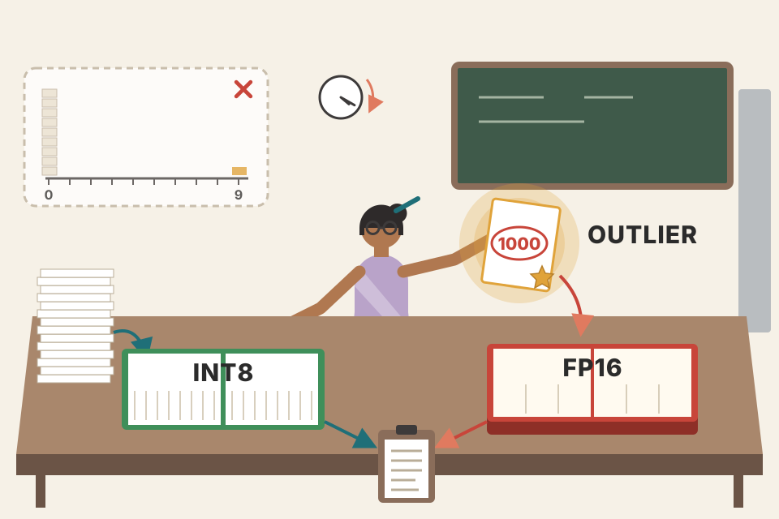
A class's exam marks on a 0–9 grade scale. If one student scored 1,000 in a bonus round, mapping 0–1,000 onto 10 grades puts everyone else in grade 0. LLM.int8() is the teacher who says "the topper's paper goes to a separate register in full detail; everyone else gets graded on the normal 0–100 scale". Then she adds both registers for the final list.
Where it breaks: keeping two registers takes extra time, which is the ~20% slowdown.
The quantization step is set by the biggest value. With one outlier of 63 among values around ±3, absmax's step is 63/127 ≈ 0.5, so 0.2 rounds to 0 and the small values lose almost all their information. In LLMs these outliers appear in a few fixed hidden dimensions (the same columns across tokens) once models pass a few billion parameters, and they matter for quality. Because they are column-aligned, splitting by column is cheap and catches nearly all of them.
"Why doesn't simple INT8 work on LLMs?" Say: about 0.1% of activation features are huge outliers; with one scale for the whole tensor they set the step size, so normal values round to zero. LLM.int8() pulls outlier columns out and multiplies them in FP16, does the rest in INT8 with per-vector scales, then sums: ~2x memory saving, <1% quality loss, ~20% slower. For 4-bit, NF4 (bitsandbytes) is what QLoRA uses.
llama.cpp is an open-source C++ library created by Georgi Gerganov for running inference with many LLMs. The book calls it the most popular quantization technique, with many quantized models on the Hugging Face Hub.
llama.cpp has its own format, GGUF, designed to make loading models simpler and faster. A GGUF file stores the tensors and metadata together and supports precisions from 1-bit to 8-bit. Names follow the number of bits plus a variant:
| Bits | GGUF types | Book's quality note |
|---|---|---|
| 1 | IQ1_S, IQ1_M | very low quality |
| 2 | IQ2_XXS/XS/S/M, Q2_K | generally low quality, but IQ2 can be usable for large models |
| 3 | IQ3_XXS/XS/S/M, Q3_K_S/M/L | low quality but usable for large models |
| 4 | IQ4_XS/NL, Q4_K_S/M, Q4_0/1 | good quality, usable for most models |
| 5 | Q5_K_S/M, Q5_0/1 | high quality |
| 6 | Q6_K | very high quality |
| 8 | Q8_0 | highest quality |
Reading the names (beyond the book): "Q" = classic quant, "K" = k-quant with super-blocks, "IQ" = i-quant (QuIP#-inspired); S/M/L = small/medium/large, how many tensors get a slightly higher-precision variant; XXS…M likewise.
llama.cpp groups weights into blocks and rounds each block to lower precision with its own scale:
w = q × block_scale.w = q × block_scale + block_minimum.w = q × block_scale(6-bit) + block_min(6-bit).Grey bars = original weights (random, modelled); coloured dots = value after 4-bit quantize → dequantize. Q4_0 here: 16 levels symmetric around 0 with scale = max|w| / 8 (as in llama.cpp, approximately). Q4_1: 16 levels from the block minimum to the maximum. Shift the block off-centre to see where Q4_1's extra "min" pays off.
Runs on a free T4 GPU in Google Colab. My condensed version (paraphrased; the book's listing names Mistral-7B-Instruct-v0.2 as an example but actually downloads mlabonne/EvolCodeLlama-7b):
# 1. get llama.cpp, build it with CUDA support, install its Python deps
!git clone https://github.com/ggerganov/llama.cpp
!cd llama.cpp && make clean && LLAMA_CUBLAS=1 make
!pip install -r llama.cpp/requirements.txt
# 2. download the Hugging Face model to convert
repo = "mlabonne/EvolCodeLlama-7b"; name = repo.split("/")[-1]
!git lfs install && git clone https://huggingface.co/{repo}
# 3. convert once to an FP16 intermediate (reused for every quant type)
f16 = f"{name}/{name.lower()}.fp16.bin"
!python llama.cpp/convert.py {name} --outtype f16 --outfile {f16}
# 4. quantize to a chosen type (Q4_K_M here); ~1 hour on a T4
kind = "q4_k_m"
!./llama.cpp/quantize {f16} {name}/{name.lower()}.{kind.upper()}.gguf {kind}LLAMA_CUBLAS=1 builds llama.cpp with NVIDIA's cuBLAS so it can use the GPU.quantize. (The book's listing builds the file name from method but defines METHOD; use one consistent name.)huggingface_hub: create_repo(f"{user}/{name}-GGUF", exist_ok=True, token=…), then HfApi().upload_folder(folder_path=name, repo_id=…, allow_patterns="*.gguf", token=…) so only the .gguf files are uploaded.Using GGUF models. Backends such as llama-cpp-python and frameworks like LangChain load them, which helps integrate a quantized model into a bigger system. To chat directly there are frontends: llama.cpp's lightweight server, LM Studio and the Text Generation Web UI, giving a ChatGPT-like experience.
Packing sarees for a trip. Instead of one rule for the whole suitcase, you fold each pouch of 32 sarees by its own biggest one (Q4_0), or also note the smallest so the folds fit snugly (Q4_1). K-quants put 8 pouches in a bigger bag with a compact label for each pouch's size. GGUF is the suitcase with a packing list taped inside, so anyone, even with a small car (a CPU), can carry it.
Where it breaks: unfolding sarees is free; de-quantizing every block on every token costs compute, which is why GPU-specific formats (Plate 18) can be faster.
Per-block scales are the fix for outliers at low cost: a big weight only spoils the 32 neighbours in its block, not the whole matrix. The overhead is the scales themselves: Q4_0 stores one 16-bit scale per 32 weights, so 4 + 16/32 = 4.5 bits per weight on average; Q4_1 adds a 16-bit min, 5 bits; Q4_K quantizes scales and mins to 6 bits and lands near 4.5 bits with better accuracy. Bit counts are from llama.cpp's formats, beyond the book.
A 7B model at Q4_K_M (~4.8 effective bits, modelled) is about 7 × 10⁹ × 4.8 / 8 ≈ 4.2 GB, versus 14 GB in FP16. That fits in 8 GB of laptop RAM with room for context, which is why GGUF is the default for local, CPU or Mac use. With a 6 GB GPU you might offload ~20 of 32 layers to it and keep the rest on the CPU.
"How would you run an LLM on a laptop or edge device?" Say: llama.cpp with a GGUF quant, usually Q4_K_M or Q5_K_M as a quality/size balance. GGUF stores block-wise quantized tensors plus metadata in one file, runs on CPU, Apple Silicon and Android, and can offload layers to a GPU. For production GPU serving I'd pick GPU formats (AWQ/GPTQ/EXL2) in vLLM or TGI instead.
GGUF/llama.cpp offers CPU inference with GPU offloading. GPTQ and EXL2 are formats dedicated to GPUs, which makes both faster than llama.cpp at inference. EXL2 gives the highest throughput with its dedicated library, ExLlamaV2.
Both formats are based on the GPTQ algorithm by Frantar et al. (2023). It improves on Optimal Brain Quantization (OBQ), an older method that quantizes weights one at a time and adjusts the rest to compensate, so that it scales to the huge matrices of LLMs:
A 3×4 toy weight matrix (modelled). Quantized columns are rounded to a grid of 0.5; the error is pushed into the not-yet-quantized columns. Real GPTQ weights that push by the inverse Hessian computed from calibration data; here a fixed 50% push stands in for it (illustration only).
GPTQ is limited to 4-bit precision. EXL2 is far more flexible: it can mix quantization levels, giving precise average bitrates anywhere between 2 and 8 bits per weight, such as 2.3, 3.5 or 6.0. It can apply several levels inside each linear layer, giving more important weights more bits. The parameters are chosen automatically: each matrix is quantized multiple times, and the combination that minimizes quantization error while meeting the target bitrate is selected. In practice this lets 70B models run on a single 24 GB GPU at 2.55 bits.
Inference is done by the ExLlamaV2 library, which runs both GPTQ and EXL2 models.
One way to hit the target by mixing two neighbouring levels from {2, 3, 4, 5, 6, 8} bits (modelled; EXL2's real search picks the mix per matrix by measured error). Bar = weights vs a 24 GB GPU.
Also on a free T4 in Colab, with meta-llama/Llama-2-7b-chat-hf:
# 1. install ExLlamaV2 from source
!git clone https://github.com/turboderp/exllamav2
!pip install -e exllamav2
# 2. clone the model repo from the Hub (git lfs as before)
repo = "meta-llama/Llama-2-7b-chat-hf"; name = repo.split("/")[-1]
# 3. fetch a calibration set: WikiText-103 test split (parquet from the Hub)
!wget <wikitext-103-v1 wikitext-test.parquet URL>
# 4. quantize to an average of 4.5 bits per weight
!python exllamav2/convert.py -i {name} -o quant -c wikitext-test.parquet -b 4.5-i input model folder, -o working/output folder, -c calibration file, -b target bitrate.Support. GPTQ and EXL2 are not as widely supported as GGUF: LM Studio, for example, doesn't integrate them. Use tools like oobabooga's Text Generation Web UI instead. They are also integrated into the transformers library and supported by TGI; GPTQ models are also supported in TensorRT-LLM. Though less popular than GGUF, many GPTQ and EXL2 models are on the Hugging Face Hub.
Rounding the bill at a group dinner. Naïve rounding: everyone rounds their share to the nearest ₹50 and the total ends up ₹120 short. GPTQ: the first person rounds, and the amount they rounded off is passed on to the next people's shares, so the total stays right. EXL2 is letting the people who ordered the expensive dishes round to the nearest ₹10 and the chai-only people to the nearest ₹50, as long as the average rounding hits the target.
Where it breaks: a bill only has to match one total; a layer must match its outputs on many inputs, which is why calibration data is needed.
GPTQ minimizes the error of the layer's output (W·X on calibration inputs X), not of the weights themselves. The Hessian (X·Xᵀ) tells which weight directions matter for the output. After rounding one column, the remaining columns are nudged to cancel the output error that rounding caused. Doing this one weight at a time (OBQ) is too slow for billions of weights; GPTQ quantizes all rows' column j together, in blocks, with lazy updates, making 175B-scale models feasible in hours.
70B at 2.55 bits ≈ 70 × 10⁹ × 2.55 / 8 ≈ 22.3 GB: fits a 24 GB card with ~1.7 GB for KV cache (short contexts only). At 4.5 bits (the walkthrough's setting) a 7B model is ~3.9 GB, and a 70B is ~39 GB, which needs two 24 GB cards or one 48 GB card. (Arithmetic from the book's numbers; overheads ignored.)
"GGUF vs GPTQ vs EXL2?" Say: GGUF is llama.cpp's portable format, CPU-first with GPU offload, the most widely supported. GPTQ is a GPU format using second-order (Hessian-based) error compensation from calibration data, 4-bit, supported by transformers, TGI and TensorRT-LLM. EXL2 builds on GPTQ with mixed per-layer bitrates from 2 to 8 bits and the highest single-GPU throughput through ExLlamaV2, at the cost of narrower tool support.
Beyond GGUF, GPTQ and EXL2 there are many techniques. The book briefly introduces Activation-aware Weight Quantization (AWQ) and two extreme techniques, QuIP# (Quantization with Incoherence Processing) and HQQ (Half-Quadratic Quantization).
AWQ, from Lin et al. (2023), is another popular algorithm. It finds and protects the most important ("salient") weights, judging importance by activation magnitude (how large the inputs flowing through a weight channel are) instead of weight magnitude. It applies an optimal per-channel scaling to these salient weights, without backpropagation or reconstruction, so the model does not overfit the calibration set. Different paradigm, but results are close to GPTQ and EXL2, though slightly slower. AWQ is well supported: integrated into TGI, vLLM and TensorRT-LLM.
An interesting trend is quantizing models to 1 or 2 bits. Some formats, like EXL2, allow this, but quality often suffers badly. Recent algorithms such as QuIP# and HQQ target this regime and preserve the original model's performance better, especially for large models (over 30B), which can end up taking less space than 7B or 13B models while giving higher-quality outputs. The book expects this trend to continue.
AWQ is a tailor who measures where the cloth is stretched most (activations), not where it's thickest (weights), and reinforces those seams first. 1–2-bit quantization is packing for a flight with a tiny cabin bag: a big wardrobe (a 70B model) squeezed hard can still carry more useful outfits than a small wardrobe packed loosely.
Where it breaks: at 1 bit, every weight is little more than a sign; only special tricks (QuIP#'s incoherence processing, lattice codebooks) keep it usable.
A weight's effect on the output is weight × input. A small weight that always sees large inputs matters more than a big weight that sees tiny ones; AWQ uses activation statistics from calibration data to find these ~1% salient channels. Scaling those channels up before quantization (and the inputs down to compensate) gives them effectively finer steps. Since it only searches for scales rather than re-fitting weights, it generalizes beyond the calibration text. The ~1% figure and scale-up/scale-down trick are from the AWQ paper, beyond the book.
To close the chapter the book summarizes which of its techniques each of the three main inference engines supports:
| Technique | TGI | vLLM | TensorRT-LLM |
|---|---|---|---|
| Continuous batching | ✓ | ✓ | ✓ |
| Speculative decoding | ✓ | – | – |
| FlashAttention2 | ✓ | ✓ | ✓ |
| PagedAttention | ✓ | ✓ | ✓ |
| Pipeline parallelism | – | – | ✓ |
| Tensor parallelism | ✓ | ✓ | ✓ |
| GPTQ | ✓ | – | ✓ |
| EXL2 | ✓ | – | – |
| AWQ | ✓ | ✓ | ✓ |
Table 8.1 (book, pdf p343): Summary of features for TGI, vLLM, and TensorRT-LLM. This is a snapshot from the book's writing (2024). Beyond the book: vLLM has since added speculative decoding, GPTQ and pipeline parallelism; always check current docs.
Tick the techniques you need; engines are scored using the book's Table 8.1 only.
"Which serving engine would you choose?" Say: all three (TGI, vLLM, TensorRT-LLM) do continuous batching, PagedAttention, FlashAttention-2, tensor parallelism and AWQ. In the book's snapshot TGI had the widest list: speculative decoding plus GPTQ and EXL2; TensorRT-LLM was the only one with pipeline parallelism (multi-node) and is NVIDIA-optimized but more work to build; vLLM is the easy high-throughput default. Then say you'd benchmark on your own traffic, because feature lists change fast.
Inference optimization is a critical part of deploying LLMs well. The chapter covered three families of techniques:
torch.compile), continuous batching, speculative decoding (predicting several tokens in parallel) and optimized attention (PagedAttention, FlashAttention-2). These give significant speedups.These strategies are essential for practical LLM applications such as chatbots and code completion. Which ones you pick depends on your hardware, the latency you need and the throughput you need. Combining them (continuous batching + speculative decoding + advanced attention + model parallelism) lets you tailor a deployment for maximum efficiency.
The next chapter goes back to the RAG system: Chapter 4 built only the ingestion pipeline; Chapter 9 adds retrieval and generation and joins them into the inference pipeline.
| Term | Meaning in one line |
|---|---|
| Decoder-only model | Transformer that generates text left to right, one token per forward pass. |
| Prefill / decode | Processing the whole prompt in parallel / generating output tokens one by one. |
| KV cache | Stored keys and values of past tokens so they aren't recomputed; size = 2·tokens·layers·heads·head_dim·bytes. |
| Static KV cache | Cache pre-allocated at max size so shapes are fixed and torch.compile can be used (up to 4x faster forward pass). |
| torch.compile | PyTorch compiler that fuses model code into optimized GPU kernels. |
| Continuous (in-flight) batching | Swap finished requests out of the batch and new ones in at every step. |
| Waiting-served ratio | Hyperparameter balancing prefill of waiting requests against decoding of running ones. |
| Speculative decoding (assisted generation) | A small draft model guesses tokens; the big model verifies them in one pass and keeps the matching prefix. |
| Prompt lookup decoding | Speculative decoding that uses n-grams from the prompt as the guesses. |
| Medusa | Extra speculation heads added to the main model (Medusa-1: heads only; Medusa-2: heads + model). |
| PagedAttention | KV cache stored in fixed-size, non-contiguous blocks, like OS paging; enables sharing (vLLM). |
| FlashAttention-2 | Attention computed in tiles inside on-chip SRAM with online softmax; exact, fewer memory transfers. |
| SRAM / HBM | Tiny fast on-chip GPU memory / large slower main GPU memory. |
| Online softmax | Softmax computed block by block with a running max and running sum of exponentials. |
| Data parallelism (DP) | Full model copy on each GPU; data split across them. |
| Pipeline parallelism (PP) | Layers split across GPUs; activations passed along (GPipe). |
| Degree of parallelism | Number of GPUs a model is split over. |
| Pipeline bubble | Idle GPU time while waiting for earlier stages. |
| Micro-batching | Splitting a batch into sub-batches so pipeline stages overlap. |
| Tensor parallelism (TP) | Weight matrices of each layer split across GPUs; partial results combined by all-reduce (Megatron-LM). |
| All-reduce | Collective operation that sums pieces from all GPUs and gives every GPU the result. |
| Sequence parallelism | Splitting LayerNorm/Dropout work along the sequence dimension across GPUs. |
| Quantization | Representing weights/activations with lower-precision data types. |
| PTQ / QAT | Quantize a trained model directly / quantize during training so the model adapts. |
| FP32 / FP16 / BF16 | Float formats: 1/8/23, 1/5/10, 1/8/7 bits of sign/exponent/significand. |
| Exponent / significand | Bits controlling range / bits controlling precision. |
| Absmax quantization | round(127·X / max|X|): symmetric INT8 in [−127, 127]. |
| Zero-point quantization | Scale by 255/(max−min) and shift by a zero-point: asymmetric INT8 in [−128, 127]. |
| Outlier features | ~0.1% of extreme values that wreck naïve quantization precision. |
| LLM.int8() | Mixed precision: outlier columns in FP16, rest in INT8; ~2x memory saving, <1% loss, ~20% slower. |
| NF4 | 4-bit NormalFloat format from QLoRA, loaded via bitsandbytes. |
| llama.cpp / GGUF | C++ inference library running on CPU/GPU/Android / its 1–8-bit model file format. |
| Q4_0 / Q4_1 / Q4_K / IQ | GGUF block schemes: scale; scale + min; super-blocks with 6-bit scales/mins; QuIP#-inspired i-quants. |
| GPTQ | Hessian-based PTQ algorithm (improves OBQ) with lazy batch updates; 4-bit GPU format. |
| EXL2 / ExLlamaV2 | GPTQ-based format with mixed 2–8-bit rates / the library that runs GPTQ and EXL2. |
| Calibration dataset | Sample text used to measure quantization error (e.g. WikiText-103). |
| AWQ | Activation-aware Weight Quantization: protects salient weights by activation magnitude. |
| QuIP# / HQQ | Algorithms for extreme 1–2-bit quantization that preserve quality better. |
assistant_model for speculative decoding, prompt_lookup_num_tokens, attn_implementation="flash_attention_2", load_in_8bit / load_in_4bit; also loads GPTQ/EXL2.create_repo and upload_folder publish yours.Each output token depends on all previous ones, so you need one full forward pass per token. Each pass reads all the weights but does little math (memory-bound), so the GPU is underused.
2 · n_tokens · n_layers · n_heads · dim_head · n_bytes. The 2 is because both a key and a value are stored per token per head per layer.
A dynamic cache changes shape every step, and the compiler needs fixed shapes. Pre-allocating the cache at max size fixes the shapes, so the model compiles into fused kernels: up to 4x faster forward pass. Not every architecture supports it.
The batch can't be refilled until the 2,000-token request ends, so the other slots sit idle for ~1,980 steps. Continuous batching fills each freed slot immediately.
The big model verifies the draft's tokens one-for-one; with different tokenizers the tokens don't correspond. The speedup depends on how often the draft's guesses match (the book: ~90% match could give 3–4x).
Virtual memory and paging: the KV cache lives in fixed-size blocks that need not be contiguous. Benefits: near-optimal memory use (bigger batches, more throughput) and sharing of prompt blocks across parallel samples or beams (up to 55% less memory overhead, up to 2.2x throughput per the authors).
It tiles Q, K, V into blocks that fit in on-chip SRAM and uses online softmax with a running max and running sum of exponentials, so probabilities are computed block by block. In training it recomputes intermediates in the backward pass, making memory linear in sequence length.
Every GPU must hold the full model, which wastes memory, only works if the model fits on one GPU, and leaves less room for data (smaller batches). Pipeline and tensor parallelism split the model itself.
Idle time while a GPU waits for activations from earlier stages. Splitting the batch into micro-batches lets the next one start on stage 0 while the previous moves to stage 1, so more stages work at once; the bubble shrinks but doesn't vanish.
The input X is broadcast to all GPUs; each computes with its slice of W; the partial outputs are combined by all-reduce. LayerNorm and Dropout span the whole input, so they're replicated or split along the sequence (sequence parallelism).
Tensor parallelism: all GPUs work on each token at once and the fast links absorb the all-reduce cost. PP saves the most memory but adds bubbles and sequential hops. Combine (PP across nodes, TP within) only if one node isn't enough.
BF16 keeps FP32's 8-bit exponent (same range) with a 7-bit significand; FP16 has 5/10 bits, so more precision but a much smaller range. Networks prefer range. BF16 needs Ampere (A100, A30) or newer; Turing (T4) lacks it.
Absmax: round(127 × 0.1 / 3.2) = 4, dequantized 3.2 × 4 / 127 ≈ 0.1008 (error ≈ 0.0008). Zero-point: scale = 255/6.2 ≈ 41.13, zero-point = −round(41.13 × −3.0) − 128 = −5, quantized round(4.11 − 5) = −1.
Outlier features (~0.1% of values) ruin naïve INT8 precision. LLM.int8() extracts outlier columns by a threshold, multiplies them in FP16 and the rest in INT8 (vector-wise), then dequantizes and adds. ~2x memory saving, <1% degradation, ~20% slower for large models.
Single 24 GB GPU: EXL2 at ~2.55 bits per weight (run by ExLlamaV2). Laptop CPU: GGUF via llama.cpp (e.g. a 2–4-bit quant, optionally offloading layers to a GPU). The chapter also notes big models at 2–3 bits can beat 7–13B models at similar memory.
The chapter's text also names Dettmers et al. (2023) for NF4/QLoRA, Tri Dao (2023) for FlashAttention-2, and QuIP# and HQQ, which are not in its reference list.